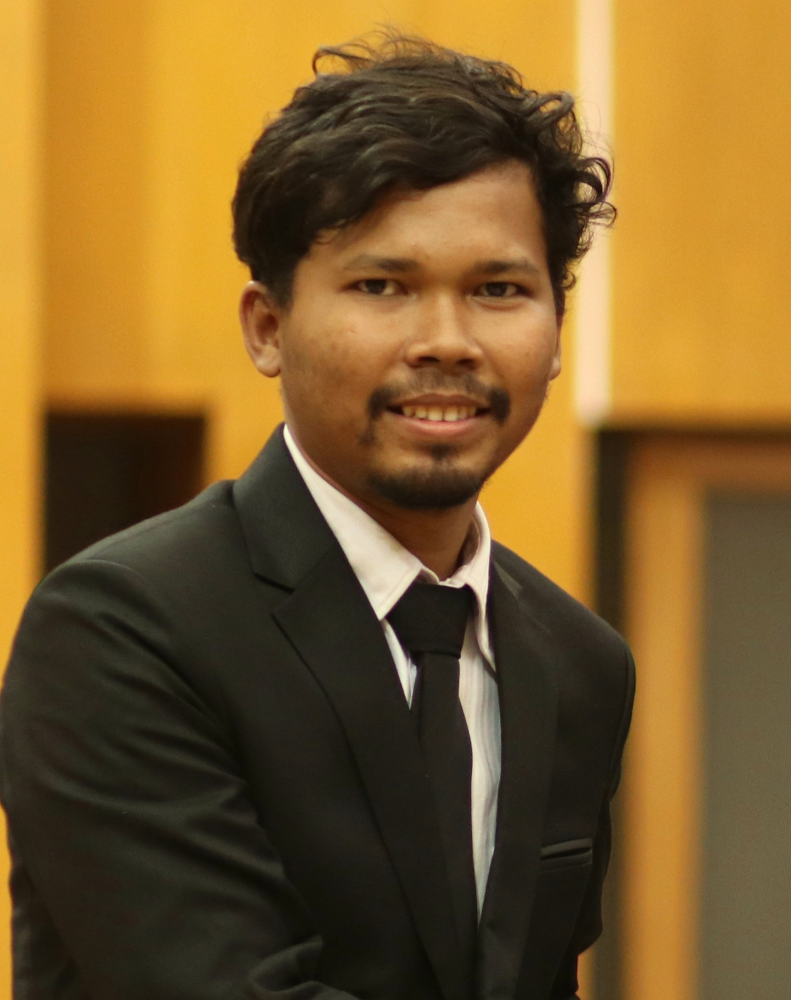
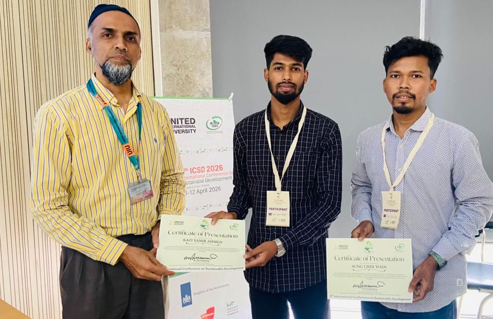

Mechanical Engineer & Researcher
Aung Chin Wain is a Mechanical Engineering graduate from DUET with strong focus on Mechanical CAD Design, Robotics, and Applied Research. He has demonstrated consistent academic and technical growth through research publications, international and national achievements, and SOLIDWORKS certifications (CSWP & CSWA).
He is actively seeking a research-oriented Master's opportunity in Mechanical Engineering or Robotics.
Intl. Conference Papers
Journal (Progress)
Intl. Awards
National Awards
B.Sc. Mechanical Engineering
Dhaka University of Engineering & Technology (DUET)
